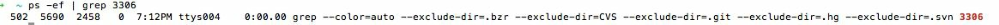
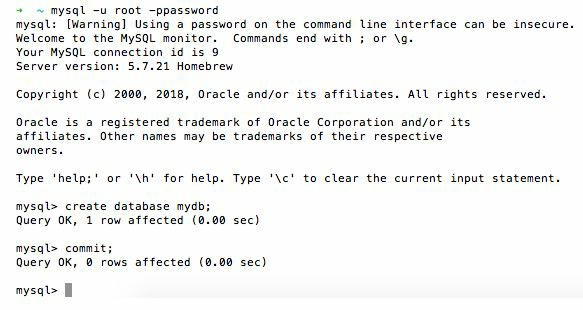
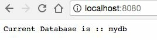

В этой главе мы рассмотрим следующие рецепты:
Всякий раз, когда мы хотим сохранить данные, мы всегда стремимся сохранить их в базах данных, которые в основном делятся на две категории — SQL и NoSQL. В каждой категории имеется несколько баз данных, которые можно использовать в зависимости от варианта использования в бизнесе, поскольку каждая из них имеет разные характеристики и служит разным целям.
В этой главе мы интегрируем веб-приложение Go с самыми известными базами данных с открытым исходным кодом — MySQL и MongoDB и научимся выполнять над ними операции CRUD. Поскольку мы будем использовать MySQL и MongoDB, я предполагаю, что обе базы данных установлены и работают на вашем локальном компьютере.
Предположим, вы разработчик и хотите сохранить данные своего приложения в базе данных MySQL. В качестве первого шага вам необходимо установить соединение между вашим приложением и MySQL, которое мы рассмотрим в этом рецепте.
Проверьте, установлен ли MySQL и работает ли он локально на порту 3306, выполнив следующую команду:
$ ps -ef | grep 3306
Это должно вернуть следующий ответ:

Кроме того, войдите в базу данных MySQL и создайте базу данных mydb, выполнив команды, как показано на следующем снимке экрана:

$ go get github.com/go-sql-driver/mysql
package main
import(
"database/sql"
"fmt"
"log"
"net/http"
"github.com/go-sql-driver/mysql"
)
const(
CONN_HOST = "localhost"
CONN_PORT = "8080"
DRIVER_NAME = "mysql"
DATA_SOURCE_NAME = "root:password@/mydb"
)
var db *sql.DB
var connectionError error
func init(){
db, connectionError = sql.Open(DRIVER_NAME, DATA_SOURCE_NAME)
if connectionError != nil{
log.Fatal("error connecting to database :: ", connectionError)
}
}
func getCurrentDb(w http.ResponseWriter, r *http.Request){
rows, err := db.Query("SELECT DATABASE() as db")
if err != nil{
log.Print("error executing query :: ", err)
return
}
var db string
for rows.Next(){
rows.Scan(&db)
}
fmt.Fprintf(w, "Current Database is :: %s", db)
}
func main(){
http.HandleFunc("/", getCurrentDb)
defer db.Close()
err := http.ListenAndServe(CONN_HOST+":"+CONN_PORT, nil)
if err != nil{
log.Fatal("error starting http server :: ", err)
return
}
}
$ go run Connect-mysql.go
Как только мы запустим программу, HTTP-сервер начнет локально прослушивать порт 8080.
При переходе по адресу http://localhost:8080/ вы получите текущее имя базы данных, как показано на следующем снимке экрана:

Давайте разберемся в написанной нами программе:
В зависимости от размера проекта вы можете объявить экземпляр БД глобально, внедрить его как зависимость с помощью обработчиков или поместить указатель пула соединений в x/net/context.
Для создания или сохранения записи в базе данных нам необходимо написать SQL-запросы и выполнить их, реализовать объектно-реляционное сопоставление (ORM) или реализовать методы сопоставления данных.
В этом рецепте мы напишем SQL-запрос и выполним его с использованием пакета базы данных/sql для создания записи. Для этого вы также можете реализовать ORM, используя любую библиотеку из ряда сторонних библиотек, доступных в Go, например:
https://github.com/jinzhu/gorm, https://github.com/go-gorp/gorp и
https://github.com/jirfag/go-queryset.
Так как в предыдущем рецепте мы уже установили соединение с базой данных MySQL , то просто расширим его для создания записи, выполняющей SQL-запрос.
Прежде чем создавать запись, нам необходимо создать таблицу в базе данных MySQL, что мы и сделаем, выполнив команды, показанные на следующем снимке экрана:
.....................